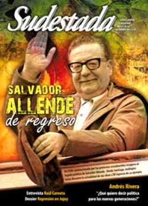

Buscar
"Somos una minoría y nunca dejaremos de serlo"
Con Kadish, su última nouvelle, Andrés Rivera aseguró que se despedía de la escritura, pero el interrogante sigue abierto mientras sea la literatura el arma más filosa del autor de La revolución es un sueño eterno. Entrevistado por Sudestada, Rivera no elude el desafío de diagnosticar el presente argentino y se anima a seguir interpretando la realidad política con una mirada marxista que pervive en el tiempo.
Edición N° 102
Septiembre 2011
Revista bimensual
Comprar edición impresaSumario
- Salvador Allende, de regreso
- Los ojos de Juan Salvo
- "Somos una minoría y nunca dejaremos de serlo"
- Sabor a impunidad
- "Arriba del escenario, la música es un juego"
- Diálogo sin tiempo
- "Hoy tenemos un movimiento pictórico sin identidad"
- El paradigma embalsamado
- Amy Winehouse: Esplendor y oscuridad
- Con orquesta es otra cosa...
Compartir Articulo

"Para mí la cosa es así. En términos marxistas, las estructuras siguen siendo iguales, no se han modificado en nada. Es decir: la Sociedad Rural está festejando como loca, y ellos están en combinación con esas industrias, algunas de origen nacional y otras internacionales. Y además es un momento excepcional desde el punto de vista económico, que permite a los pobres recoger esa vieja figura de las migajas que caen de la mesa de los poderosos, chau". Así arremete Andrés Rivera antes de cualquier pregunta, antes de esbozar un punto de partida para una entrevista que, como siempre, termina transformada en una libreta de apuntes que se inicia por el lado de la literatura pero termina subrayando un presente complejo y contradictorio.
"Esta es la imagen que yo tengo desde este reducto fortificado sobre la política nacional: vos te podés hacer el canchero con Estados Unidos, realmente el poder de la gran burguesía se ha reducido; ya no existe la lucha contra el comunismo, se terminó, no es un peligro para Estados Unidos, que se puede dar el lujo de cara para afuera de nombrar a un negro presidente de los Estados Unidos, joda, joda". Rivera no especula con quedar bien con nadie, no precisa de un discurso conciliador y mucho menos de recurrir a argumentos constructivos. Por el contrario, cuando habla, provoca, va al ataque. Desnuda las paradojas de la izquierda, describe con tres o cuatro palabras el poder intocable de la burguesía, desliza un par de preguntas que obligan a pensar a quien lo escucha.
Como polemista feroz no tiene competidores en un medio donde lo usual es procurar guardarse ciertas críticas para no romper con todo y acentuar el aislamiento. Rivera está solo, como ha escrito tantas veces. Y esa soledad siempre es una puerta abierta para quienes esperan, cuando lo escuchan y cuando lo leen, algo más que su literatura.
-En Kadish hay una nota al pie, donde explicás el significado que tiene para los judíos esa palabra. Decís que es recordar a las personas que alguien ha amado mucho. ¿A quiénes amó Andrés Rivera y a quiénes Arturo Reedson?
-En primer lugar, Arturo Reedson, como ocurre en la buena literatura, es un alter ego del autor; es un anciano que goza, en esta ciudad-país que se llama Buenos Aires, de una situación privilegiada y que, por cierto, siendo porteño y argentino, es descendiente de judíos, y ha tenido una larga etapa militante. Reedson en Kadish reflexiona sobre su pasado, qué hizo y qué dejó de hacer, habida cuenta de que es un ateo, está allí y probablemente se lamente -no sé si eso se dice en la nouvelle-, aunque es ateo de un solo pecado: el de no haber aprendido el inglés para leer a William Faulkner o a Ernest Hemingway en su lengua original. Cuando digo que Reedson es el alter ego del autor, no hago más que afirmar lo que dije en otros reportajes: ¿Qué fue Robert Jordan en Por quién doblan las campanas, sino el alter ego de Ernest Hemingway? ¿Qué fue Phillip Marlowe, sino el alter ego de ese gran escritor que se llamó Raymond Chandler? Creo que está respondida la pregunta.
-Con esta novela, más que nunca hay una idea de, a partir de citas, recortes y pequeñas anécdotas inconclusas, volver a esos recuerdos y contar una historia...
-De cortar el relato con muy pocas palabras que estén aceitadas, e informaciones irrefutables, como la que alude a Felipe Solá. Es como si yo preguntara, ¿cómo subsiste la revista que ustedes dirigen? ¿Cómo es posible que el señor Felipe Solá, diputado, se proclame candidato a presidente, y diga que para pasarla bien en política hay que "hacerse el boludo"? ¿Qué quiere decir eso, más allá de la simple expresión grosera de alguien que tiene dos dedos de frente -o no, no sé-? ¿Qué implica? ¿Qué quiere decir política para las nuevas generaciones? ¿Qué significa la izquierda en este país para ustedes, que son la izquierda? ¿Existe?
(La nota completa en la edición gráfica de Sudestada Nº 102 - septiembre 2011)
Comentarios
Walter Marini e Ignacio Portela
Articulos más vistos


LIBRERÍA SUDESTADA

Colección infantil

Distribuidora de Libros

Suscripción

Sudestada en URUGUAY

Otros articulos de esta edición
 Editorial
Editorial
Los ojos de Juan Salvo
 Plástica: Ponciano Cárdenas
Plástica: Ponciano Cárdenas
"Hoy tenemos un movimiento pictórico sin identidad"
Diestro en pintura mural, años de docencia en escuela de Arte, el pintor boliviano nos brinda una cátedra de cultura ...
 Nota de Tapa
Nota de Tapa
Salvador Allende, de regreso
Líder estudiantil. Médico. Fundador del partido Socialista de Chile. Senador por Valparaíso. Ministro. Candidato a la presidencia. Presidente. Salvador Allende ...
 Murales de sumisión
Murales de sumisión
El paradigma embalsamado
El ofensivo mural de bienvenida que se erige en la localidad chaqueña Misión Nueva Pompeya, y que es denunciado reiteradamente ...
 Entrevista con Raúl Carnota
Entrevista con Raúl Carnota
"Arriba del escenario, la música es un juego"
Es uno de los folkloristas más respetado y versionado de los últimos años. Gringo, rubio y nacido en Buenos Aires, ...
Diálogo sin tiempo
Mixtura excelente entre la poesía y el debate político, Un libro rojo para Lenin, escrito por el revolucionario y poeta ...